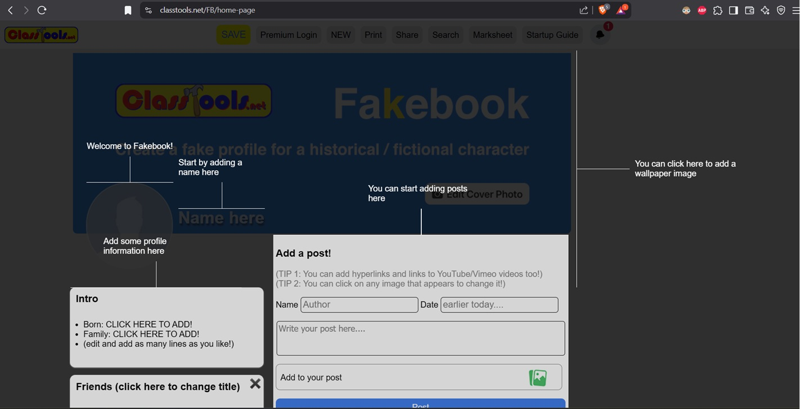
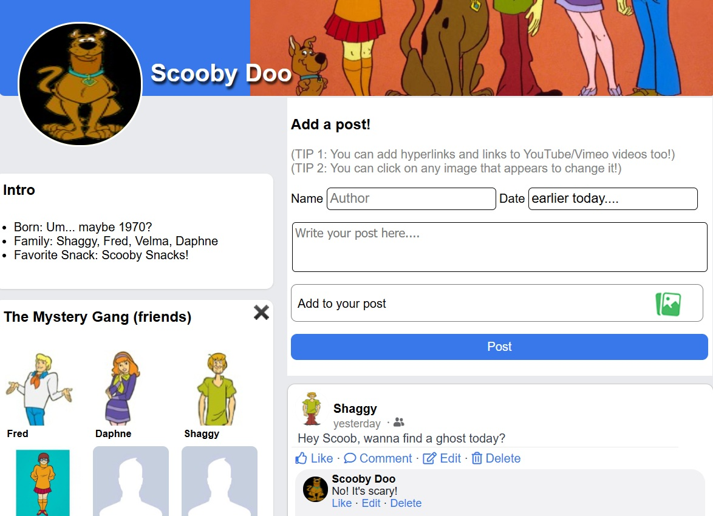
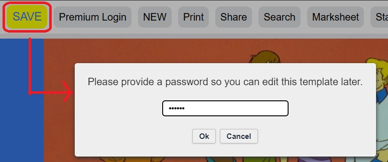

Fakebook
Fakebook is an educational tool from ClassTools.net that lets users create imaginary social media profiles. It serves as a structured platform for documenting relationships, timelines, and interactions in a visually engaging format.
Fakebook offers users the possibility of creating a fully customizable profile, from the textual content itself to the visual elements such profile/biographic pictures, friends, and many more. Some of the things you can use Fakebook for are:
- Create simulated social media profiles for historical figures, literary characters, or iconic figures, documenting their achievements, relationships, and key events.
- Character Analysis: Develop profiles for book characters, tracking their development and interactions throughout a story. Great for dwelving into the world of literature and fiction
- Debates & Discussions: Use Fakebook to simulate debates between historical or fictional characters, encouraging critical thinking.
How to use Fakebook
Firstly, you need to access Fakebook by visiting the website. The domain is as follows: https://www.classtools.net/FB/home-page
You will be greeted by the following screen:
In the image, you get a brief mention of all the elements that can be modified in order to create your profile. If you want to change your profile picture or the bio, make sure you have the image that you want to upload downloaded in your computer.
I've made Scooby Doo's own fakebook page. Check it out!
For more information, check out the Fakebook Startup Guide. It's a one-page introductory document which covers the basics for using the website.
You can also save your fakebook site. The procesdure to do so is as follows:
Click on save / insert password
Copy the link
References
- Ngonzalezi. (n.d.). Fakebook Info y Tutorial para el Profesorado. Calaméo. Retrieved May 29, 2025, from Calaméo.
- Fakebook Startup Guide. (n.d.). Classtools.net. https://www.classtools.net/FB/home-page.